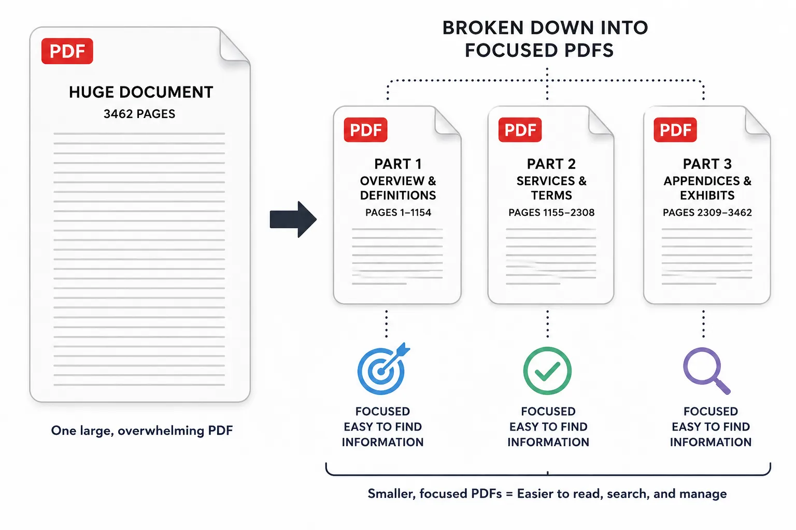
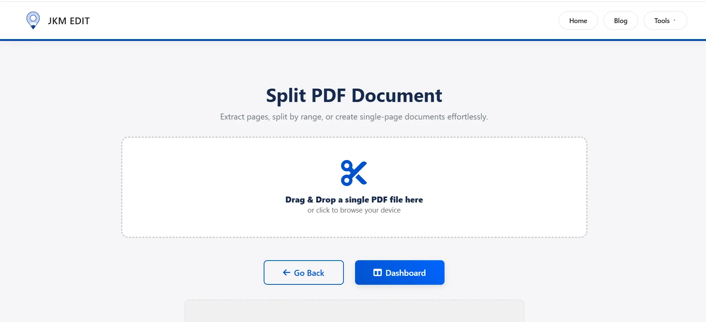
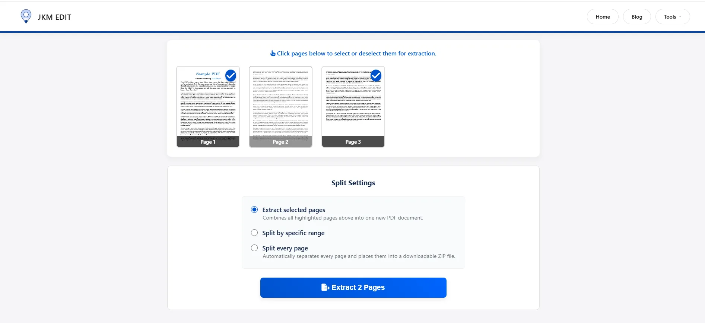
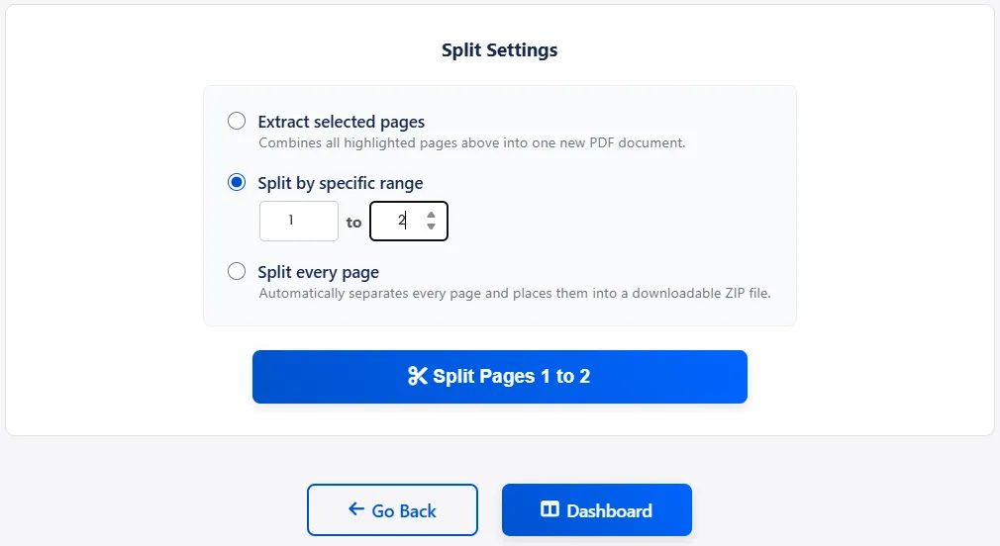
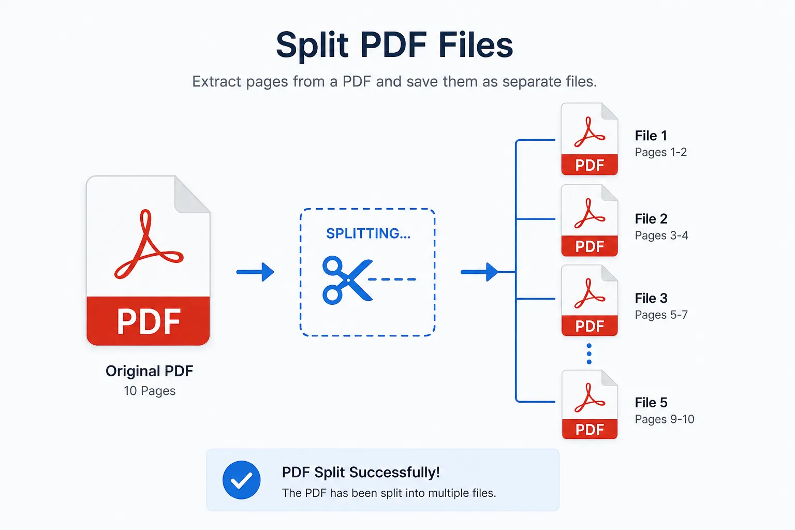

How to Split PDF Files Online Easily — Complete Guide
A complete guide for better document control and organization. Break large PDFs into focused, usable parts instantly without losing quality.
Written by JKM Edit Team
Published on May 16, 2026
10 min read
How to split PDF file online easily, expert guide. A guide to better document management. Split large PDFs into focused, useable parts at once without loss of quality.
Splitting Single PDF to Multiple Small PDF Files
When single PDF file becomes a problem. PDF file is a document to hold documents static. In many cases, it is turned to the problem, not the solution.
Sample Single PDF File Split Casing. Many chapters that are not used at once. Multiple scanned pages from different places. Multiple reports from different departments. Multiple documents that are mixed up by mistake in one single file.
On real life, it means that... Users need small file, not the big file. This needs split not just feature, but needs in documents management. To be efficient, users prefer to use JKM Edit Split PDF Tool with JKM Edit Home.
A PDF split tool is a documents tool to split one single PDF to multiple PDF files based on page, range and group. Think about it, this PDF split tool is not a "file blubber". Even more powerful, this PDF split tool is a documents kernel to keep only meaningful info in the file and delete the rest of the file for a specific goal.
They don't have to bite – unzip heavy and long documents into: Focused sections, Topic files, Page snippets, Ready to use documents.

Simple Example: One single 120 pages PDF could be the Introduction, Chapter 1-5, Appendix Referencing. But some users may just need Chapter 2 and Chapter3. With a split tool. Before: 1 single PDF File. After: Multiple split PDF Files usable to different audience.
Do really splitting is more important than we expect. We think it is not that important, but this is a productivity tool that can help us becoming an effective communication professionals.
Why PDF Splitting is Important
1. It helps with digital document overload. We are overloaded each with too many massive PDFs. The problem is we have to read more to find what we need.
2. It helps with information targeting. We can deliver only the exact information rather than UC documents.
3. It helps us with what we really need from those documents. We have different stakeholders, each need different pieces of information from a same PDF: Human Resources need only the certificates, Finance need only the invoices, Students need only the chapters.
Ready to unzip what you need?
Stop sending massive files to people who only want one page. Extract single page (PDF) instantly.
If you upload a PDF into a split tool, It goes and reads all the pages, Spreads them out into individual units, Applies your selection (good single page / good page ranges), Creates new independent PDF files. Nothing changes in the content, the resolution isn't affected, it just re-structures stuff.
How to Split PDF with JKM Edit - Step by Step tutorial
Step 1, Open the Tool
Open the official secure link: JKM Edit Split PDF Tool.

Step 2, Upload Your PDF File
Snap a file like a report, a class report, a scanned document, etc...

Step 3, Select what to extract
This is the critical part. you have these options: Individual pages (2,5,9), Individual range (1-10), Multiple ranges (e.g. by chapter).

Step 4, Execute to Split
The press the "Split PDF" button and the process will this file securely in seconds.
Step 5, Download Files Output
You will receive clean, split pdfs to download,ed upload, print pay.
Watch Full Video Tutorial: How to Split PDF Use Jkm Edit
Follows a tutorial? Check out a brief step by step video showing exactly how fast and easy it is to split your documents.
When to use a splitter pdf tool
Classroom Educators
Process over 100s of exam pdf chapters as batches
Students
Only keep pages with homework details from heavy pdf textbooks
Business office
Divide company yearly report by department. Send specific pages to each client and keep other info private.
Presenting form to government
Upload a single ID page from an overload document
Client Service (Freelancer)
Send clients only pdf of their work
Why JKM edit is faster to split pdf
Everyone knows that traditional software is bad, but with Jkm edit is different.
It Doesn't Do (Traditional software)
(JKM edit)
Takes up space to install and needs updates
Directly accessed
Hard to operate Complex operations
but simple and easy operates selection
Slow to load huge website loading
but fast and instant cloud-loaded
Unnecessary protocols
Only necessary protocols
Frequently Asked Questions
Yes, using JKM Edit you can split PDF files completely free without any hidden charges or premium subscriptions.
Absolutely. You can select single pages (like page 5), a continuous range (like pages 1-10), or custom selections to extract exactly what you need.
No. The splitting process simply reorganizes the document structure. The extracted pages maintain their exact original resolution, text clarity, and formatting.
No installation is required. JKM Edit operates entirely in your web browser, allowing you to split files on any Mac, Windows, Android, or iOS device instantly.
Yes, JKM Edit prioritizes user privacy. Documents are processed securely directly through the web tool, ensuring your personal and business data remains safe.
Bottom Line
It is the best way is your PDF pages online with JKM Edit Edit Split PDF Tool. So why use it? Because it is a tool that help you know. Your documents go from: Bulk information → Split information. Full documents → Important important information. Confusing → Easy readable. It is for this reason that anyone needs to use PDF split tools like JKM Edit Split PDF Tool.

Start split PDF files with just a click
Take Back Control of Your Files. One of the fastest, easiest and most secure ways to split your PDF files online. No downloads or installations necessary.